| set | mean_x | mean_y | sd_x | sd_y | correlation |
|---|---|---|---|---|---|
| Dataset 1 | 9 | 7.5 | 3.32 | 2.03 | 0.82 |
| Dataset 2 | 9 | 7.5 | 3.32 | 2.03 | 0.82 |
| Dataset 3 | 9 | 7.5 | 3.32 | 2.03 | 0.82 |
| Dataset 4 | 9 | 7.5 | 3.32 | 2.03 | 0.82 |
Week 4: Exploratory Data Analysis & ggplot2
CDAE 7990 · Applied Data Science & Visualization
Andrew Van Leuven
September 24, 2026
Welcome Back
- Three weeks of getting data into R and reshaping it. Tonight we finally look at it
- Keep your Posit Cloud project open. Every chart tonight is one you can run yourself
- Tonight’s goal: go from a data frame you’ve never seen to a handful of charts that tell you what’s in it
Today’s Plan
- Housekeeping: HW2 is due Sunday
- Why we plot: summary statistics can hide a lot
- The grammar of graphics: data, aesthetics, and geoms
- Building a plot, layer by layer: aesthetics, facets, labels
- Break
- Exploratory data analysis: variation, covariation, and unusual values
- Saving your work and your turn
Housekeeping
HW2 Is Due Sunday
- HW2 is due Sunday, Sept. 27 by 11:59pm
- Last week’s
left_join()demo covers step 5. If the join still isn’t working, grab me at the break or email me before the weekend - Remember to Render before you’re done. If it doesn’t render, I can’t grade it
- HW3 (due Oct. 25) will cover tonight and next week, so tonight’s code is worth keeping
Why We Plot
Four Datasets, One Set of Statistics
- This is Anscombe’s quartet (1973), built into R as
anscombe - Same means, same standard deviations, same correlation. Are these the same data?
Not Even Close
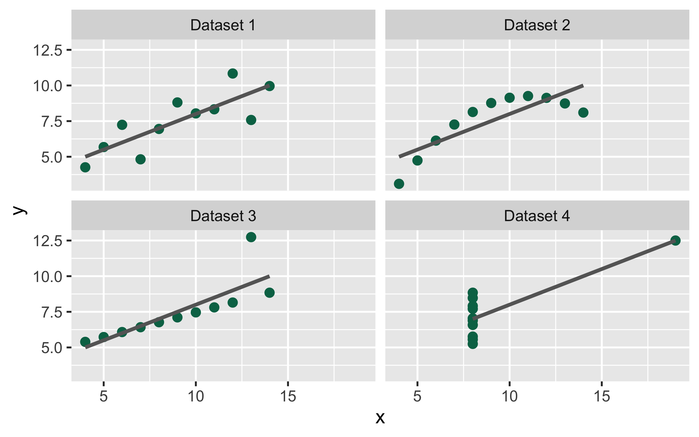
- One linear trend, one curve, one outlier dragging the line, and one single point doing all the work
- Summary statistics are a compression. A chart is often the fastest way to see what the compression threw away
The Grammar of Graphics
Every ggplot Has Three Parts
- Data: a data frame, one row per observation
- Aesthetics (
aes()): which columns map to which visual properties, like x position, y position, color, or size - Geoms: the shapes that actually get drawn, like points, bars, lines, or boxes
Everything else (facets, scales, labels, themes) refines those three. R4DS Ch. 9 calls this a layered grammar, because you build a plot by adding layers with +.

Tonight’s Data: midwest, Again
# A tibble: 437 × 7
county state poptotal popdensity percollege percbelowpoverty inmetro
<chr> <chr> <int> <dbl> <dbl> <dbl> <int>
1 ADAMS IL 66090 1271. 19.6 13.2 0
2 ALEXAND… IL 10626 759 11.2 32.2 0
3 BOND IL 14991 681. 17.0 12.1 0
4 BOONE IL 30806 1812. 17.3 7.21 1
5 BROWN IL 5836 324. 14.5 13.5 0
# ℹ 432 more rows- The same 437 Midwestern counties from Week 2, from the 2000 Census
- Already in ggplot2, so there’s nothing to download
inmetrois1for counties in a metro area and0otherwise
Step 1: Just the Data
- A blank canvas. ggplot knows the data, but not what to draw or where
Step 2: Add Aesthetics
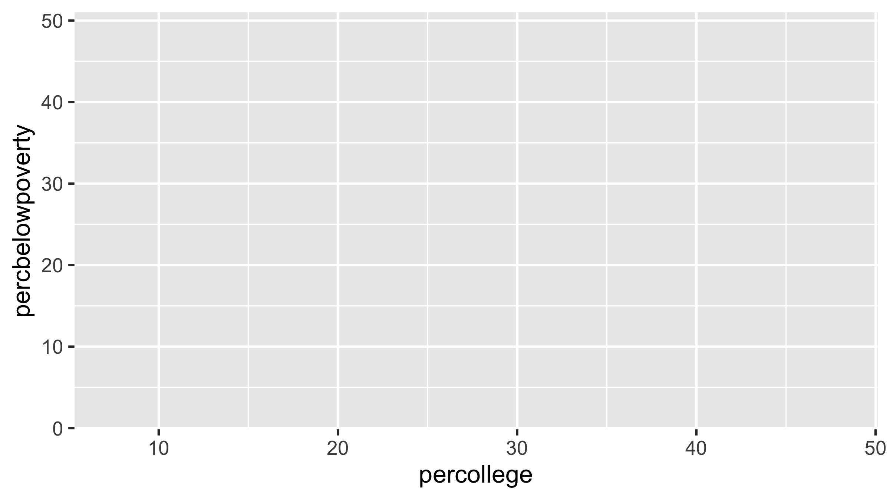
- Now it knows which column goes on which axis, so it draws the axes and scales. Still no data on the plot
Step 3: Add a Geom
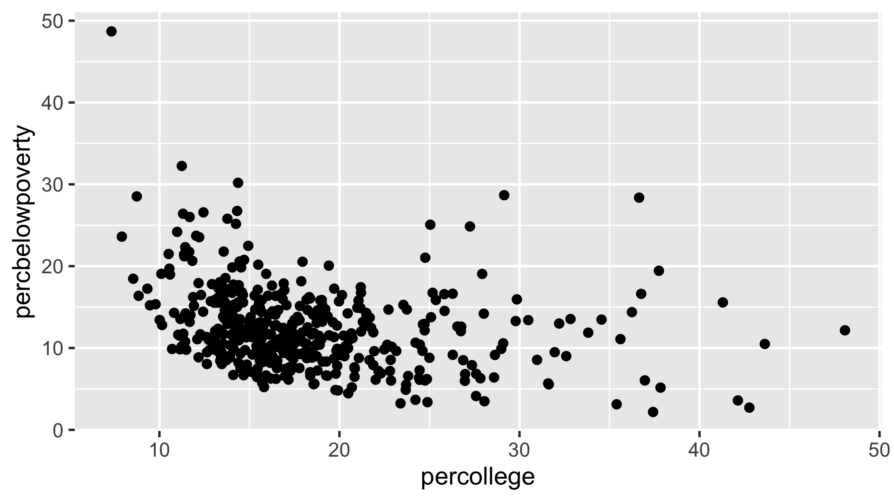
geom_point()draws one point per row- A first look: more college grads, somewhat less poverty, but lots of scatter
Mapping a Third Variable to Color
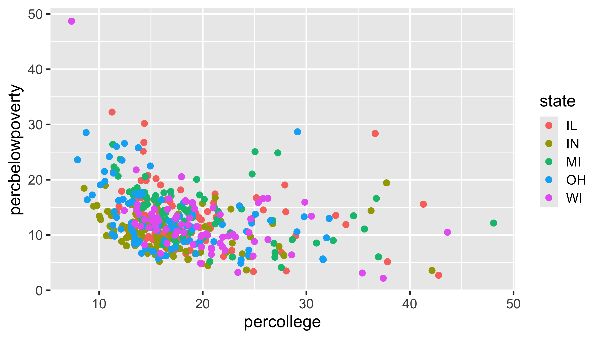
- Anything inside
aes()is mapped to a column, and ggplot builds the legend for you - Five colors is about the limit before a chart gets hard to read
Mapping vs. Setting
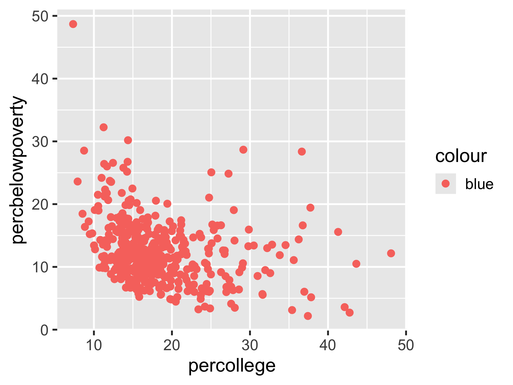
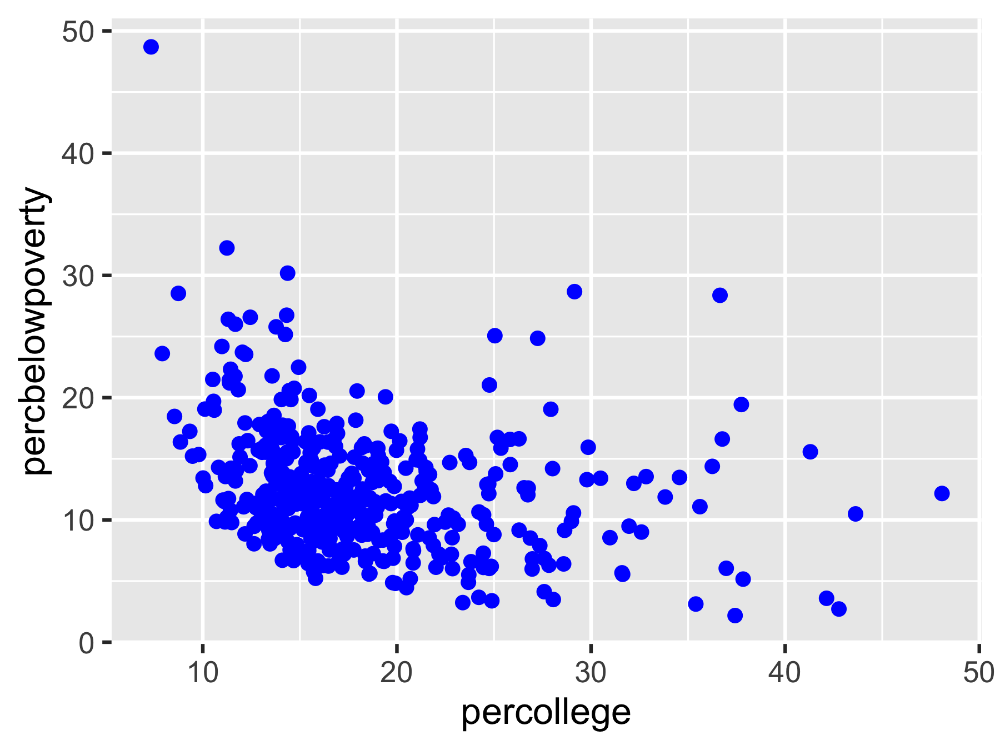
- Left:
"blue"insideaes()is treated as data, a column where every value is the word “blue.” You get a salmon-colored legend entry - Right: outside
aes(), it’s a fixed setting. Every point is blue - Rule of thumb: inside
aes()if it depends on the data, outside if it doesn’t
Layers Stack
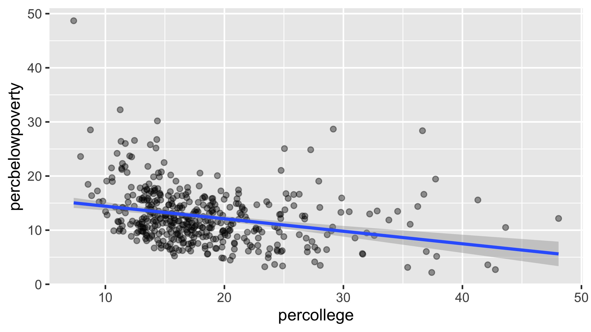
- Each
+ geom_*()adds a layer on top of the last alphamakes points semi-transparent, so overlapping points show up darkergeom_smooth(method = "lm")adds a linear trend with a confidence band
Global vs. Local Aesthetics
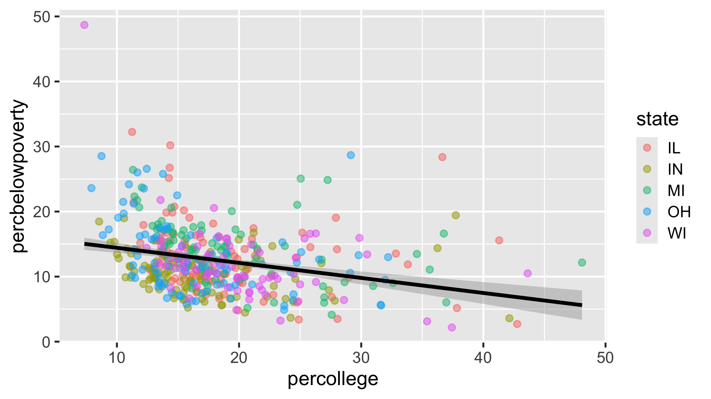
- Aesthetics in
ggplot()apply to every layer - Aesthetics in a single geom apply only to that layer
- Here, color by state for the points, but one overall trend line. Move
color = stateup intoggplot()and you’d get five lines instead
Facets: Small Multiples
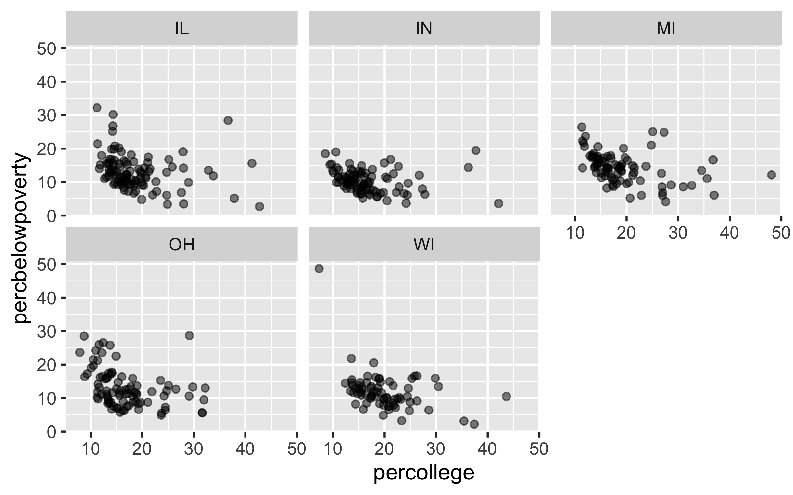
facet_wrap()makes one panel per value of a variable, all on the same scales- Often easier to read than five colors crammed into one panel
Labels Make It Readable
ggplot(midwest, aes(x = percollege, y = percbelowpoverty)) +
geom_point(alpha = 0.5, color = "#007155") +
labs(
title = "More college grads, less poverty",
subtitle = "Midwestern counties, 2000 Census",
x = "Adults with a college degree (%)",
y = "Population below poverty line (%)",
caption = "Source: ggplot2::midwest"
)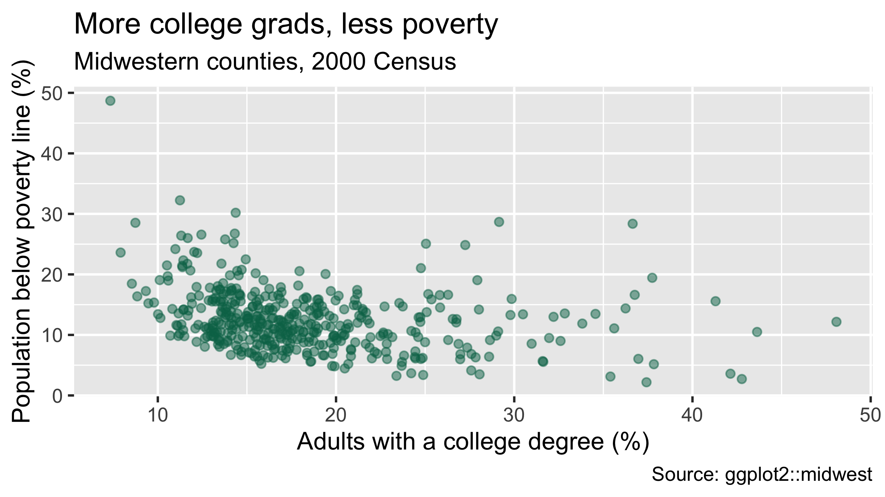
- Column names like
percbelowpovertyare fine for you. They are not fine for anyone else - A title that states the finding does more work than one that restates the axes
The Template
- Almost every chart this semester, maps included, fits this shape
- R4DS Ch. 9 has the full list of geoms, and the ggplot2 cheat sheet is worth keeping open
Break?
Exploratory Data Analysis
What Is EDA?
- Exploratory data analysis is a loop, not a formal procedure:
- Ask a question about your data
- Answer it with a chart, a transformation, or a summary
- Use what you learned to ask a better question
- Most of these charts are for you. They don’t need titles or polish
- R4DS Ch. 10 frames it around two kinds of questions: how does a variable vary, and how do variables covary?
Variation: One Variable at a Time
Continuous Variables: Histograms
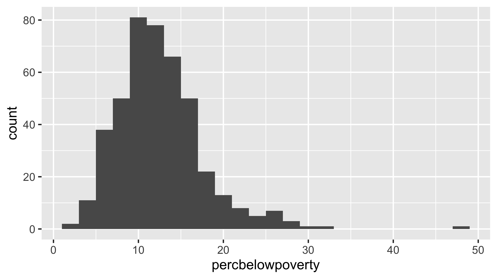
- A histogram cuts the x-axis into bins and counts the rows in each
- Most counties sit between about 7% and 18% in poverty, with a tail to the right
Bin Width Changes the Story
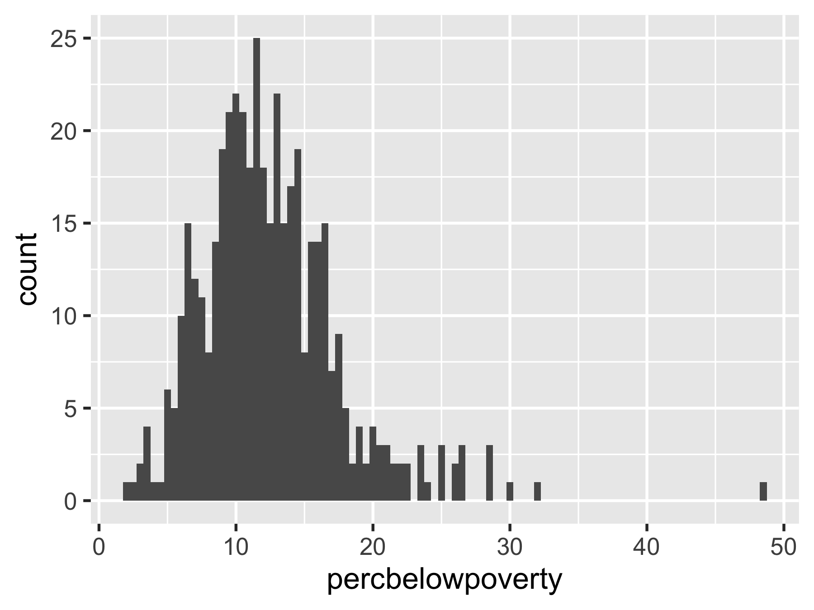
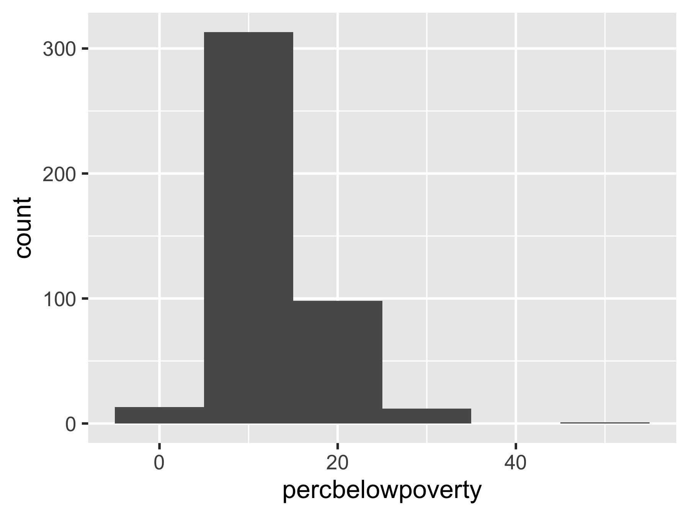
- Too narrow and it’s noise. Too wide and the shape disappears
- Try a few. There’s no single right answer, and the default (30 bins) is rarely the best one
Skewed Data: Try a Log Scale
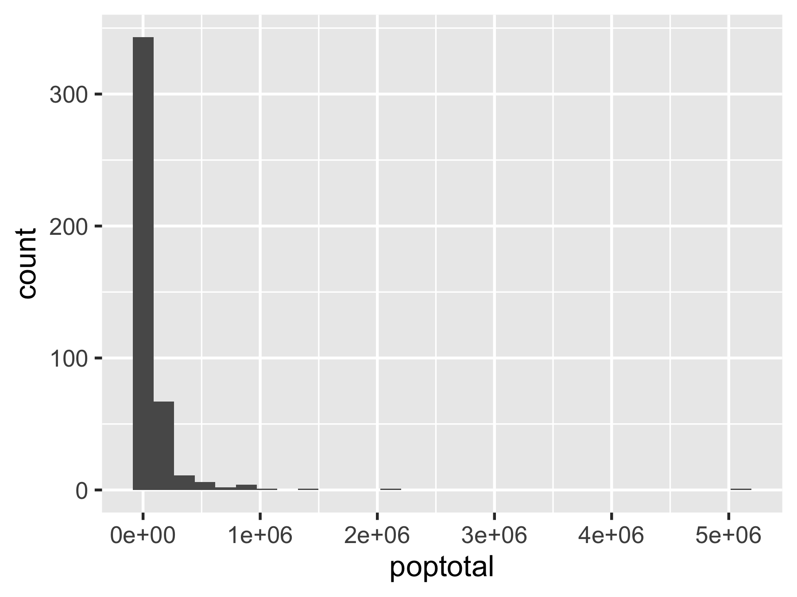
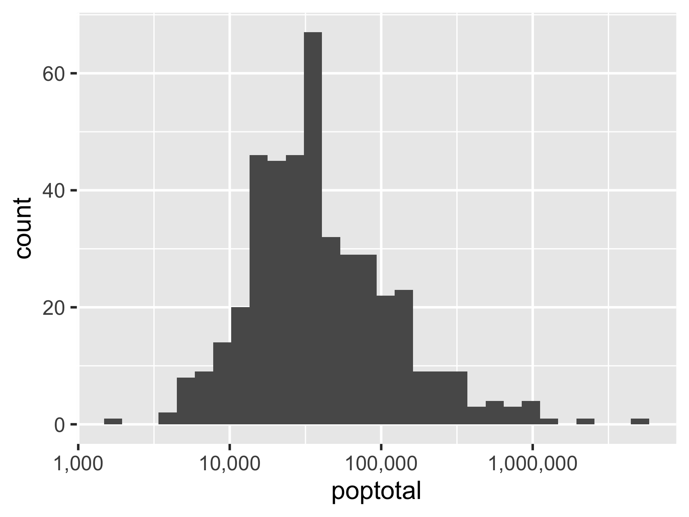
- Left: Cook County (Chicago, 5 million people) squashes everything else into one bar
- Right: on a log scale, each step on the axis is ten times bigger than the last, and the distribution becomes readable
- County populations, incomes, and housing prices almost always need this
Categorical Variables: Bar Charts
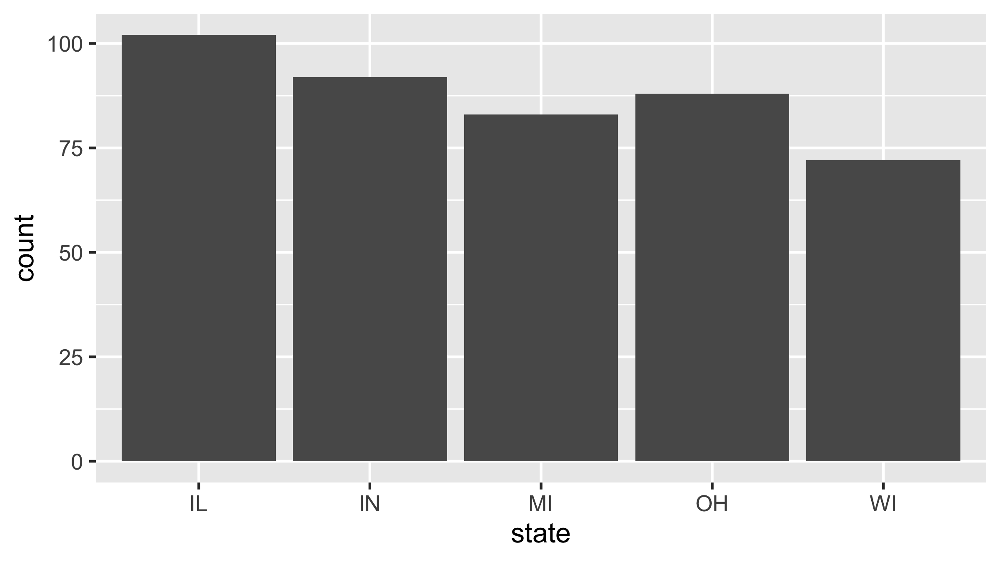
geom_bar()counts rows for you, the same thingcount(state)did in Week 2- Already have the counts in a column? Use
geom_col()instead, with the counts asy
Unusual Values
# A tibble: 3 × 4
county state poptotal percbelowpoverty
<chr> <chr> <int> <dbl>
1 ALEXANDER IL 10626 32.2
2 PULASKI IL 7523 30.2
3 MENOMINEE WI 3890 48.7- The long right tail from the histogram, pulled out with
filter() - Outliers aren’t automatically errors. Check whether each one is real or a data problem. These are real: Menominee County, WI is almost entirely the Menominee Reservation, and Alexander and Pulaski are at Illinois’s rural southern tip
- Don’t delete an unusual value just because it’s unusual. If it’s a real error, replace it with
NAand say so
Covariation: How Variables Move Together
Categorical + Continuous: Boxplots

- The box is the middle 50% of counties, the line is the median, and the dots are outliers
- Metro counties have a clearly higher share of college grads, and far more spread
- Notice the pipe: a
mutate()first, then straight intoggplot()
Reordering Categories
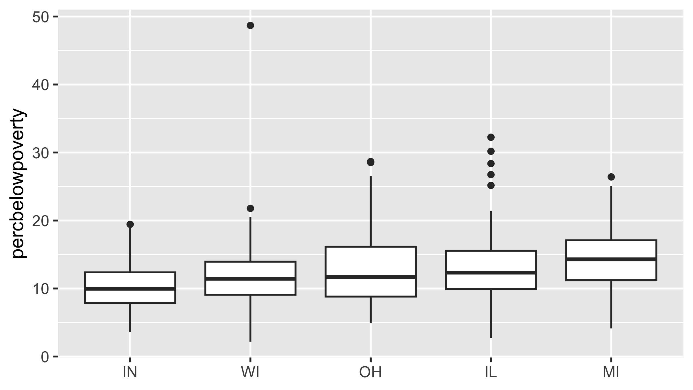
- By default ggplot puts categories in alphabetical order, which is almost never what you want
fct_reorder()sorts them by the median of another variable, so the pattern reads left to right
Two Categorical Variables

count()the combinations first, then draw a tile for each one- A heat map like this is really just a colored table. For a handful of categories, a plain table from
count()can work just as well
Two Continuous Variables
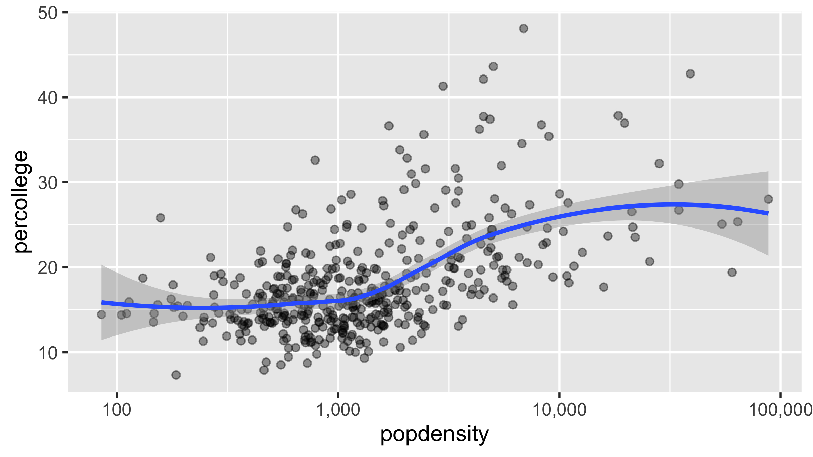
- The scatterplot you already know, with a log x-axis for the same reason as before
method = "loess"fits a curve instead of a straight line. Denser counties have more college grads, and the relationship steepens at the top
Patterns Are Questions, Not Answers
When you spot a pattern, ask:
- Could it be coincidence?
- How strong is it, and how would you describe it in one sentence?
- What other variable might explain it? (Here, metro status is doing a lot of the work)
- Does it hold within subgroups, like each state or metro vs. nonmetro?
EDA points you toward the story. It doesn’t prove it.
Saving a Plot
- A ggplot is an object like any other, so you can assign it with
<- ggsave()writes it to a file, sized in inches. Set the size on purpose so text doesn’t come out tiny- Inside a Quarto document, you usually don’t need this. The chart renders right into the HTML
Your Turn (20 min)
Using midwest, make each of these. Work with a neighbor.
- A histogram of
percollege. Try at least two bin widths and pick the one you think tells the story best - A scatterplot of
percollege(x) againstpercbelowpoverty(y), colored by metro status (build themetrocolumn withmutate()first) - Boxplots of
percollegeby state, sorted by median - Take any one of the three and give it real labels with
labs(), including a title that states what you see
Your Turn: One Way to Do It
# 1
ggplot(midwest, aes(x = percollege)) +
geom_histogram(binwidth = 2)
# 2
midwest |>
mutate(metro = if_else(inmetro == 1, "Metro", "Nonmetro")) |>
ggplot(aes(x = percollege, y = percbelowpoverty, color = metro)) +
geom_point(alpha = 0.5)
# 3
ggplot(midwest, aes(x = fct_reorder(state, percollege, median),
y = percollege)) +
geom_boxplot()
# 4
ggplot(midwest, aes(x = percollege)) +
geom_histogram(binwidth = 2) +
labs(title = "In most Midwestern counties, under 1 in 5 adults has a degree",
x = "Adults with a college degree (%)", y = "Number of counties")Before Next Class
Next week: advanced ggplot2, and what separates a chart that works from one that doesn’t.
CDAE 7990 · Week 4